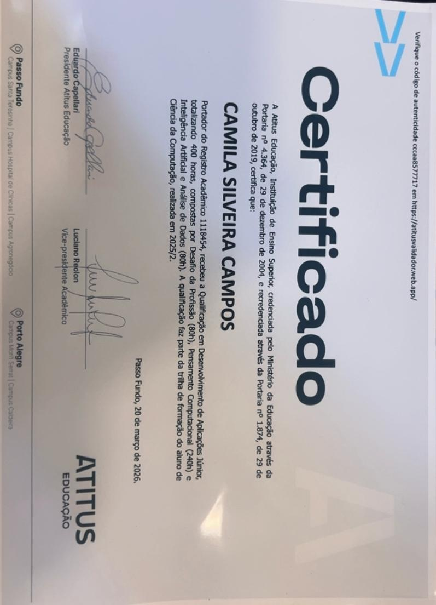
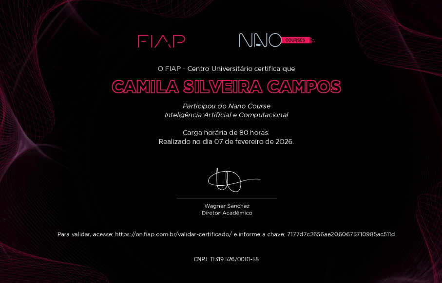
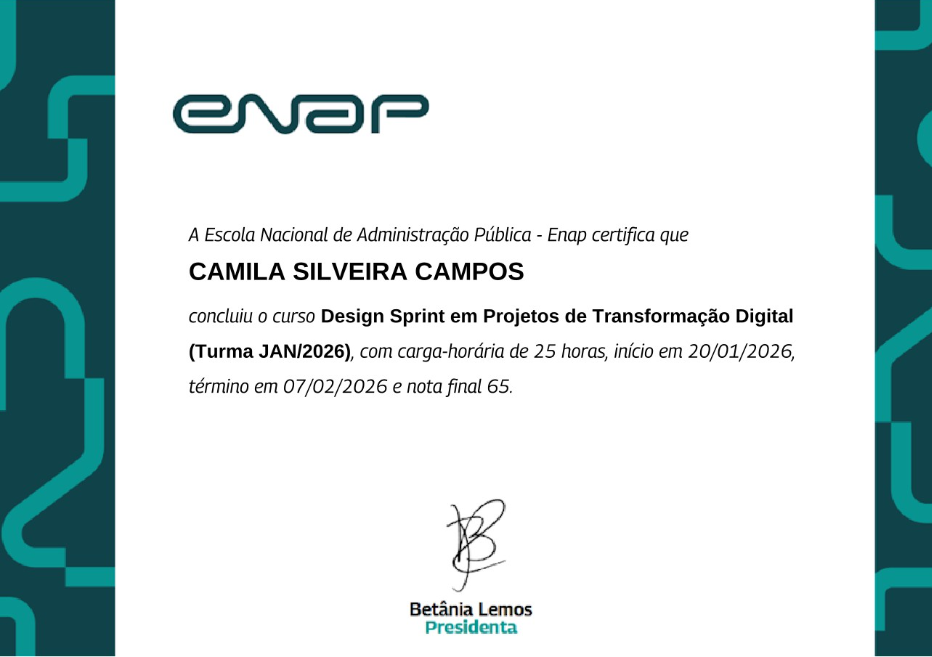

Ciência da Computação
Atitus Educação
Em andamento
Estudante de Ciência da Computação | Psicóloga
Integrando tecnologia e comportamento humano para desenvolver interfaces inteligentes e centradas nas pessoas.
Vamos conversar?Sou psicóloga formada pela Atitus Educação, com sólida experiência em comunicação estratégica e desenvolvimento humano.
Atualmente, sou acadêmica de Ciência da Computação, direciono minha carreira para a área de tecnologia, unindo a compreensão do comportamento humano à criação de soluções digitais inovadoras.
Desenvolvedora Front-end em formação, com conhecimentos básicos e grande motivação para crescer na área.
Consultora de Relacionamento com o Mercado – Atitus Educação · Tempo integral
Desde setembro de 2018 · Presencial
Profissional focada em experiência do cliente (CX) e crescimento estratégico, utilizando CRM e análise de leads para otimizar resultados.
Atuo com organização de contatos e estudo do perfil do cliente.
Guiada pela inovação e visão de mercado, desenvolvo estratégias que fortalecem parcerias e impulsionam o crescimento institucional.
HTML5, CSS3, JavaScript (básico), Git e GitHub, UX/UI Design, Responsividade, CRM (gestão de leads e relacionamento com cliente), análise de dados e perfil de cliente, organização e estruturação de informações.
Comunicação estratégica, empatia aplicada à experiência do cliente (CX), pensamento analítico, foco em resultados, organização e gestão de demandas, visão de negócio, proatividade, adaptabilidade e aprendizado contínuo
Atitus Educação
Em andamento
Atitus Educação
Concluído

Certificação de 400h pela Atitus Educação. Foco em lógica, IA e análise de dados.

Fundamentos de Inteligência Artificial e computação aplicada pela FIAP.

Metodologias ágeis e resolução de problemas focadas em transformação digital.
Interface responsiva focada em UX (User Experience), aplicando conceitos de psicologia cognitiva para otimizar a navegação. O projeto utiliza HTML5 semântico, CSS3 com variáveis e JavaScript para interações dinâmicas.